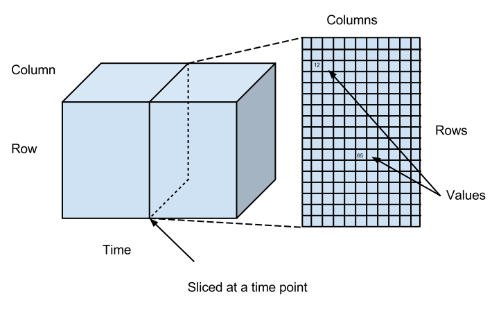

Datasets are schema-less, append-only named sets of data points, which are contained in cells, which sit at the intersection of rows and columns. Data points are composed of a value and a timestamp. Each data point can thus be represented as a (row, column, timestamp, value) tuple, and datasets can be thought of as sparse 3-dimensional matrices. The rows and columns of a dataset can be interchanged by transposing the matrix. Datasets can contain billions of data points arranged in millions of rows with millions of columns.
Rows and columns have structured identifiers, called paths. A path is an array of UTF-8 strings without null characters called path elements (e.g. ['a','b']) and can be represented as strings called names with dots between the path elements (e.g. 'a.b'). Dots can appear in path elements, causing their string representation to be surrounded by double-quote characters, which can themselves appear in path elements, and are doubled up in the string representation: the path ['a.b', '"hello"'] is stringified as "a.b"."""hello""". These rules make it possible to manipulate hierarchically-structured (i.e. JSON) data within SQL queries.
Datasets can be created and data can be appended to them via the REST API and they can also loaded from or saved to files via Procedures.
The following diagram shows this as a 3-dimensional matrix, and shows what happens when we "slice" the matrix at a particular point in time.

Ignoring the time dimension, you can imagine that the data looks something like this:
ColumnA | ColumnB | ColumnC | ColumnD | ColumnE | |
RowA | |||||
RowB | 123 | 7634.2 | |||
RowC | "hello" | ||||
RowD | |||||
RowE |
Another way of looking at the data is as a series of events, as follows:
Timestamp | Row Name | Column Name | Value |
2013-04-20 10:02:01 | User123 | First Name | "Bob" |
2013-04-20 10:02:01 | User123 | Test Score 1 | 0.78 |
2013-04-20 10:03:33 | User456 | First Name | "Jill" |
2013-04-20 10:03:33 | User456 | Test Score 1 | 0.45 |
2013-04-22 11:10:22 | User123 | Test Score 1 | 0.0 |
2013-04-22 11:10:22 | User123 | Revision Reason | "Cheating" |
... | ... | ... | ... |
The ability to record multiple states of the world at different times is a fundamental part of the design of MLDB as a database for machine learning. The two versions of Bob's score are both recorded, along with the time at which it changed. This allows MLDB to reconstruct what was known at a given point in time, making historical data far more useful to learn from.
Datasets are created via a REST API call with one of the following types:
| Type | Description | Doc |
|---|---|---|
beh | Memory-mappable dataset type to efficiently store behavioural data | [doc] |
beh.binary | Memory-mappable dataset type to efficiently store binary valued behavioural data | [doc] |
beh.binary.mutable | Recordable dataset designed to store binary valued behavioral data | [doc] |
beh.mutable | Recordable dataset designed to store behavioral data | [doc] |
embedding | Dataset to record a set of coordinates per row | [doc] |
merged | Merges together several datasets into one virtual dataset | [doc] |
mongodb.dataset | Dataset type that forwards records to a MongoDB database | [doc] |
mongodb.record | Dataset type that forwards records to a MongoDB database | [doc] |
sampled | Dataset that samples another dataset | [doc] |
sparse.mutable | Sparse dataset which can be recorded to | [doc] |
sqliteSparse | SQLite-backed fully consistent, persistent, mutable sparse database | [doc] |
tabular | Dense dataset which can be recorded to | [doc] |
transposed | Dataset that interchanges rows and columns | [doc] |
union | Unify together several datasets | [doc] |